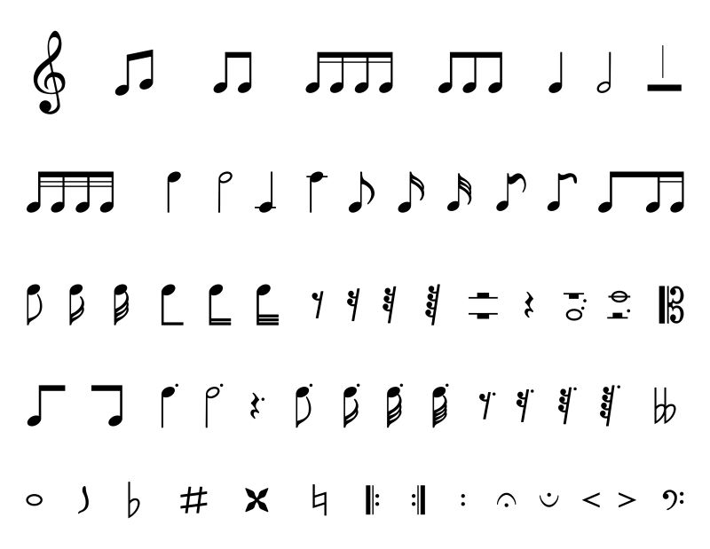

Welcome to Simple Music Theory
Read below to learn more about the basics of music theory


Above is pictured a whole menagerie of symbols used for annotating and writing music. You probably recognize the clefs and quarter notes from the previous page. What is a quarter note, you may ask? Notes in music have different amounts of time they are played/held for. The word 'quarter'
here tells us this length of time. This amount of time differs depending on time signature and beats per minute defined at the beginning of the piece, but we won't get into that here. Along with quarter notes, we have half and whole notes as well as dotted notes. A half note looks just like a quarter
note except the middle of the note isn't filled in. Can you find one in the picture above? A half note's value is double that of a quarter note. Saying that a note is 'dotted' means that a dot is written next to it. This takes half of the original note's value and adds it to the note.
Have you ever heard a break in a piece of music, or a part in a song where there's no music? More than likely, what we call a 'rest' is written on the sheet music at this spot in the music. Rests have time values just like notes do! A quarter rest looks like a squiggle.
Can you find one in the picture? A half rest looks like a top hat, which can be found just to the left of the quarter rest in the picture.
Just like quarter, half, and whole notes increase in time value, we also have notes that decrease in time value! These are called eighth and sixteenth notes. Written on sheet music with bars connecting them, these can be found at the top of the left picture after the treble clef. If an eighth or sixteenth note is
written by itself, it looks like a quarter note with a little flag coming off the top. A sixteenth note is written with two flags.
Picture a piano keyboard in your mind. Remember those black keys? Sometimes we want to play those notes, but there isn't a line or space for them on the staff. In order to solve this problem, we can use the 'sharp' or 'flat' symbols! Found in the picture above, these symbols tells us to play the note either
one half step above or below where it is originally written. 'Sharp' means one half-step above; 'flat' means one half-step below.
Hopefully the information above has given you a better idea of the basics of music theory